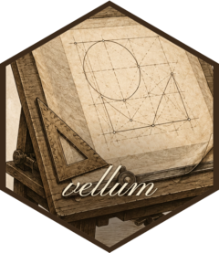

Package index
Building & rendering scenes
Build a scene functionally with vl_scene() and a pipeline of push() / draw() / pop(), then render it. render() picks the backend (PNG / SVG / PDF) from the file extension.
-
vl_scene()push()draw()pop()render() - Build and render a scene
-
describe() - Set a scene's accessibility name and description
-
display() - Display a scene in the active graphics device
-
scene_raster() - Read a rendered scene back as pixels
-
scene_svg() - Render a scene to an SVG string
-
as_vellum_scene() - Coerce an object to a vellum scene
-
rect_grob()roundrect_grob()lines_grob()polygon_grob()bezier_grob()spline_grob()circle_grob()points_grob()hexagon_grob()sector_grob()loop_grob()segments_grob()path_grob()raster_grob()text_grob() - Graphical objects (grobs)
-
vl_arrow() - Arrowheads
Units, viewports & layout
Coordinate systems, nested viewports with scales, clipping and rotation, and the row/column layout solver.
-
vl_unit()is_unit() - Units of measurement
-
vl_viewport()grid_layout() - Viewports and layouts
-
grobwidth()grobheight() - Size a unit by a grob's extent
-
why_size() - Explain why a node has its resolved size
Paint & appearance
The paint model shared across all backends: gradients, tiling patterns, masks, reusable styles, and hand-drawn rendering.
-
vl_gpar() - Graphical parameters
-
style() - Reusable style classes
-
linear_gradient()radial_gradient() - Gradient fills
-
vl_pattern() - Tiling-pattern fills
-
as_mask() - Masks
-
sketch() - Hand-drawn ("sketch") rendering
-
vl_strwidth()vl_strheight() - Measure text
-
md() - Rich-text labels (markdown subset)
Big data
Aggregate-then-shade rendering for large point clouds, dense timeseries, and network edges.
-
datashade() - Aggregate-then-shade a large point cloud (datashader-style)
-
datashade_lines()datashade_segments() - Aggregate-then-shade dense lines and segments (datashader-style)
-
spread() - Spread (dilate) the pixels of a raster grob
-
dynspread() - Dynamically spread a raster grob to a target density
Inspecting & editing scenes
Because the scene graph is retained, it can be queried, edited by node name, hit-tested, and serialized to a per-element model.
-
node_names()get_node()edit_node() - Inspect and edit a scene by node name
-
hit_test() - Hit-test a scene
-
scene_model() - A serializable, per-element model of a scene
Grid & ggplot2 interop
Render an existing grid grob tree — including ggplot2 and lattice — through the vellum backend.
-
as_vellum()render_grid() - Render grid graphics (ggplot2 / lattice / grid) through vellum
-
vl_clear_render_cache() - Clear the render cache
-
vellumvellum-package - vellum: A Low-Level Graphics Framework with a Rust Backend